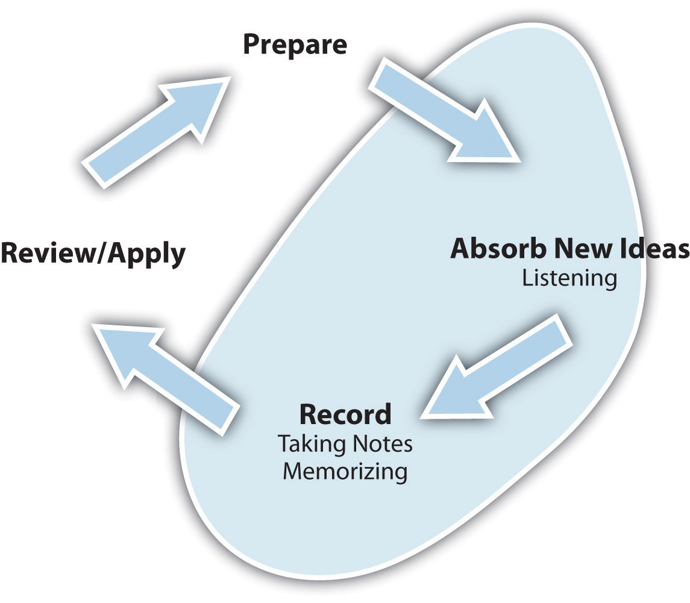

Too many students try to get the grade just by going to class, maybe a little note taking, and then cramming through the text right before an exam they feel unprepared for. Sound familiar? This approach may have worked for you in high school where tests and quizzes were more frequent and teachers prepared study guides for you, but colleges require you to take responsibility for your learning and to be better prepared.
Most students simply have not learned how to study and don’t understand how learning works. As we discussed in Chapter 1 "You and Your College Experience", learning is actually a cycle of four steps: preparing, absorbing, capturing, and reviewing. When you get in the habit of paying attention to this cycle, it becomes relatively easy to study well. But you must use all four steps.
This chapter focuses on listeningPurposefully focusing on what a speaker is saying with the objective of understanding., a key skill for learning new material, and note taking, the most important skill in the capturing phase of the cycle. These skills are closely related. Good listening skills make you a better note taker, and taking good notes can help you listen better. Both are key study skills to help you do better in your classes.
Figure 4.2 The Learning Cycle
